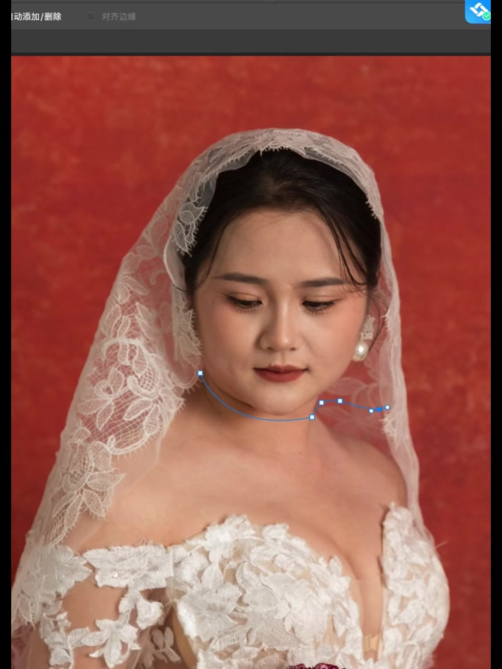
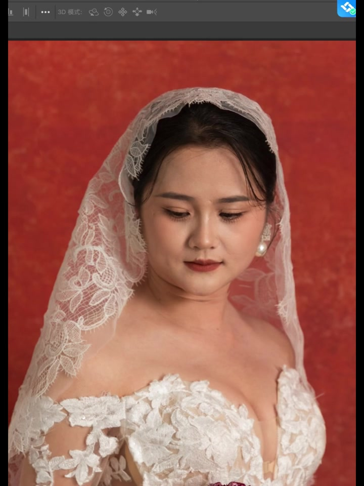
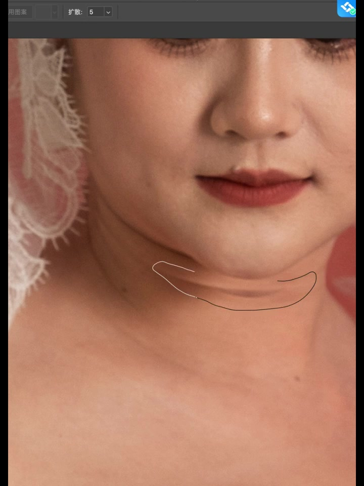
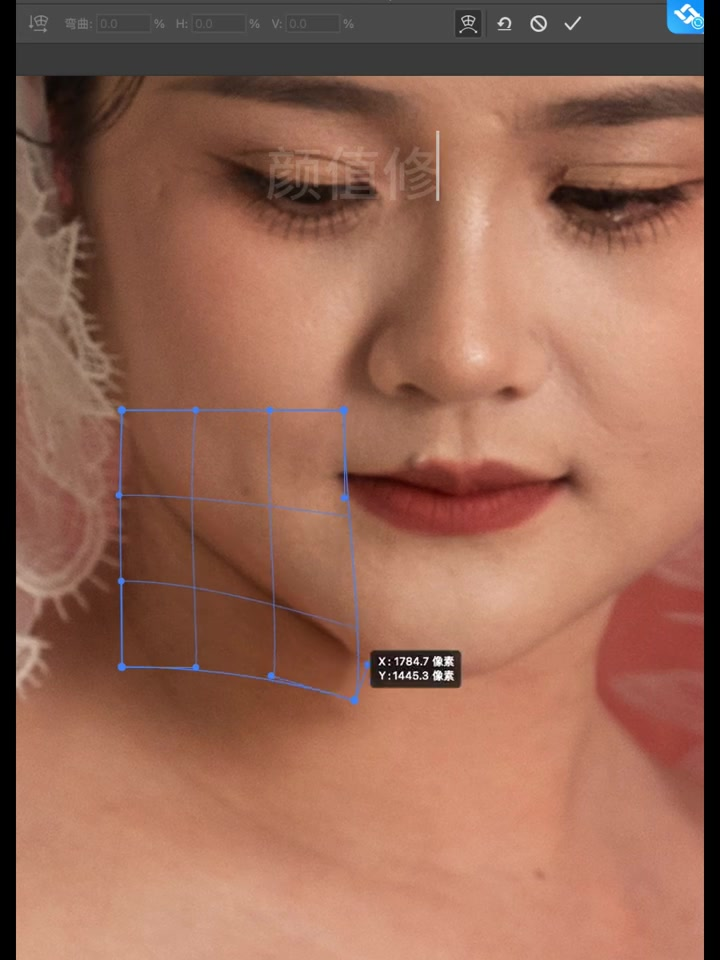
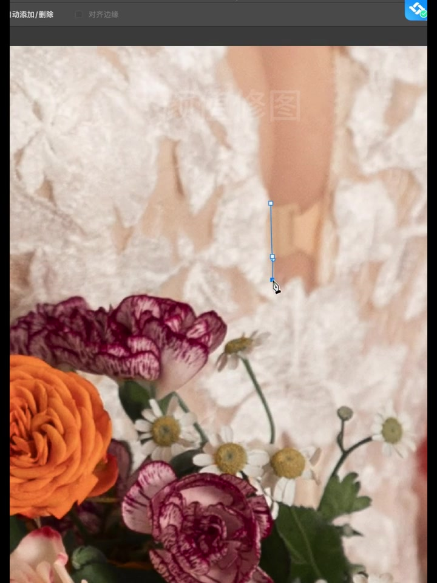
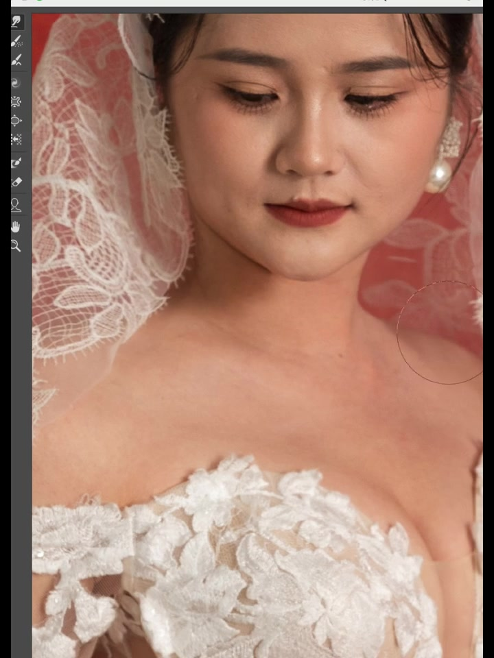
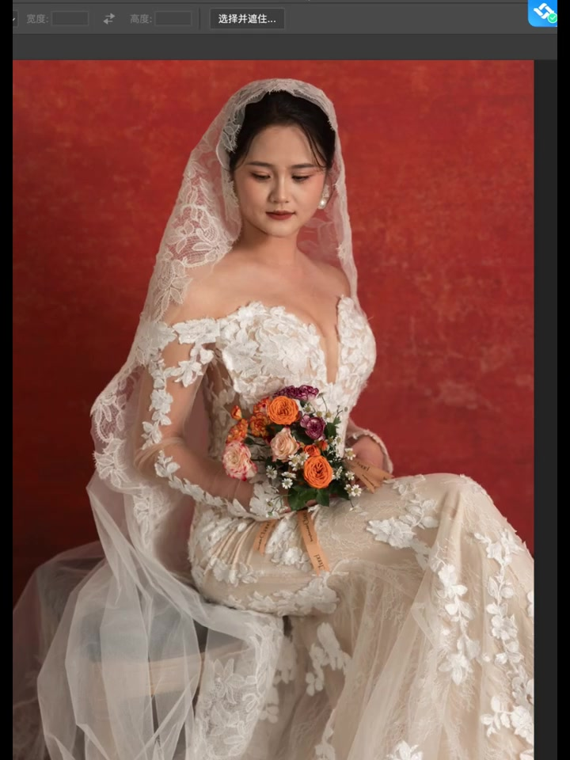
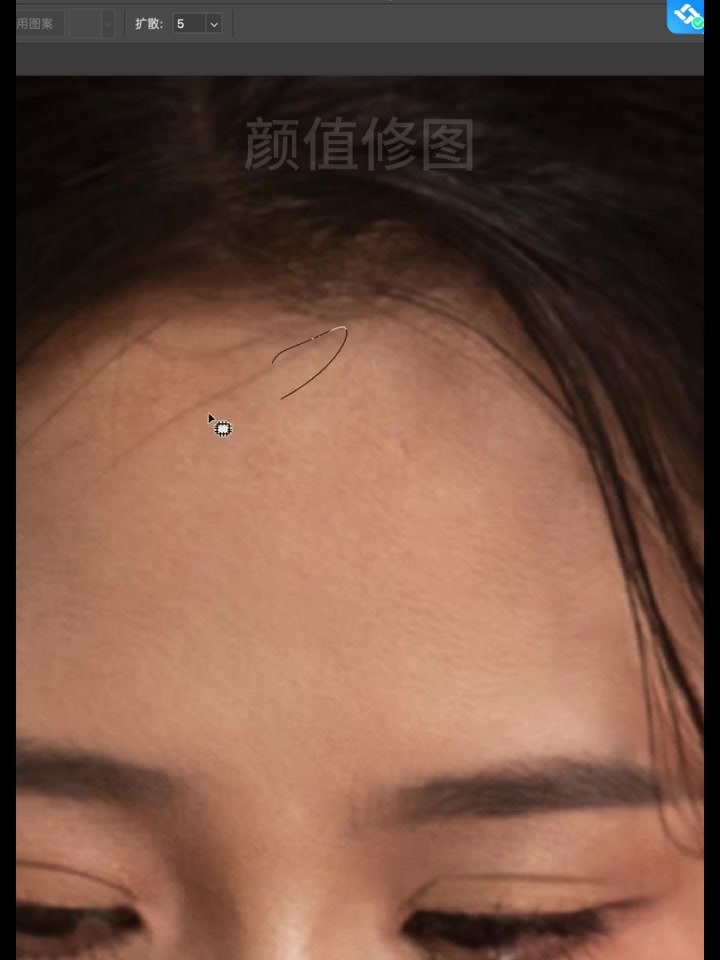

开场：用路径把下颌轮廓画清楚
视频一开始就是修图界面：红底婚纱人像，作者在下颌与颈部附近拉出蓝色钢笔路径，选项栏可见「自动添加/删除」「对齐边缘」。标题主张是「原图 VS 精修」——小姐姐底子已经很好，只需稍稍修一点更精致。

3D 模式：先看清整张婚纱人像
界面顶部切换到「3D 模式」，画面给出新娘俯视表情、蕾丝头纱、珍珠耳环与深红背景的完整半身。这一段像是在提醒：精修前先确认整体气质，而不是一头扎进局部。

颈部横纹：圈选后准备扩散处理
镜头推到下颌与颈部特写，作者用细黑线圈住一道明显横纹；选项里「扩散」设为 5。底子好的人像也常见这类皮肤折痕——视频把「稍稍修一点」落到具体瑕疵点上。

液化网格：脸颊与发纱轻推
接着出现蓝色变形网格：先罩住右颊与下颌，参数栏显示弯曲/%H/%V 等；水印「颜值修图」叠在额头。随后网格移到发际与蕾丝头纱，继续做轻微形变。这里对应标题里的「精致」——不是大改脸，而是局部塑形。
- 在颊颌区域启用变形网格，微调轮廓
- 再把网格挪到头发与头纱边缘，整理外形
- 弯曲与宽高百分比保持接近 0，强调轻量操作

蕾丝与花束：钢笔继续抠细节
画面下移到捧花与裙身蕾丝：橙色玫瑰、粉紫康乃馨与白色小花压在复杂蕾丝上。作者再次启用钢笔路径，沿着蕾丝边缘或腋侧镂空区域走点，选项仍是「自动添加/删除」。精修不只修脸，也照顾服饰层次。

修复笔：颈部与薄纱袖的肤质清理
界面切到更接近 Photoshop 的工具栏（移动、套索、污点修复、仿制图章等）。圆形笔刷先停在颈部皮肤，再移到薄纱袖与蕾丝镂空处——可见「稍稍修一点」也包括透肤区与局部瑕疵，而不是只磨脸。

选择并遮住：回到全身检查
顶部出现「选择并遮住…」，画面拉回完整坐姿：头纱垂落、捧花在手、红底对比强烈。这一步像是在抠像或边缘检查后，确认整体是否仍自然——对应「原图 VS 精修」的对照心态。

收尾：眼皮、发丝与全局笔刷
后半段推到眼部特写，光标停在上眼睑；再切到额头，圈选散落发丝，扩散仍为 5。最后回到全身，流量 100%、平滑 0% 的笔刷在裙身与捧花一带扫过。全程没有口播总结，但操作顺序本身就是结论：先轮廓与局部瑕疵，再服饰细节，最后做边缘与发丝收拾。
